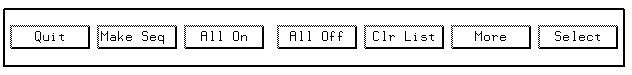

Creating a List of Wafers
Assuming you have already specified the number of wafers in your test, and the cassette ID, (see Executing a Workorder From the Command Line), proceed as follows,
- Click the More button in the main Wafer Select screen.
A secondary set of buttons appears:

- Click the Make Seq button.
A list of wafers is then created (the number of wafers being that specified in the earlier Line Dialog screens), within the first column of the screen; this list comprises the active cassette- shown at the top of the column. The data in the Active list: entry area, corresponds to the Lot_id parameter you specified in the Workorder Manager screen.